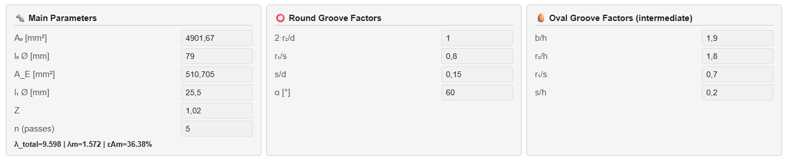
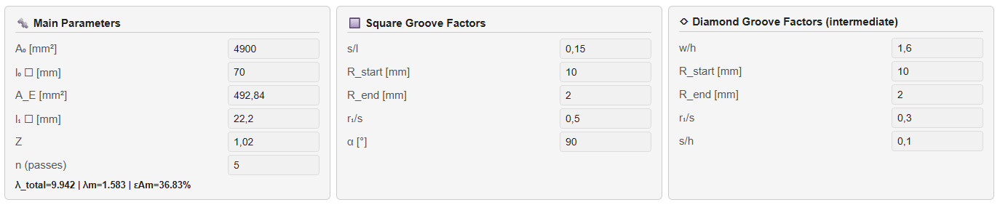
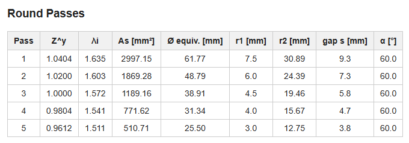
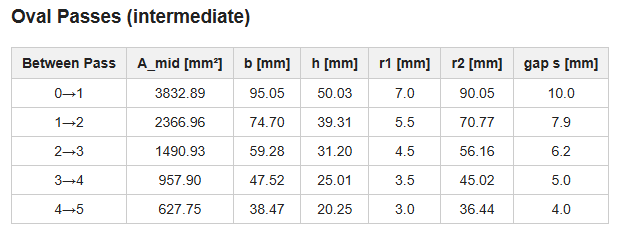
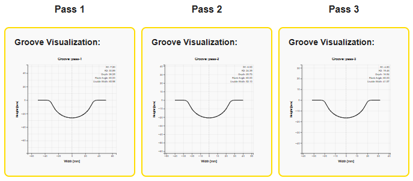
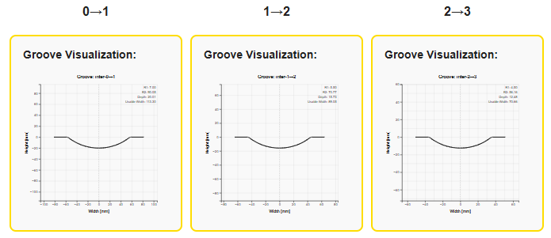
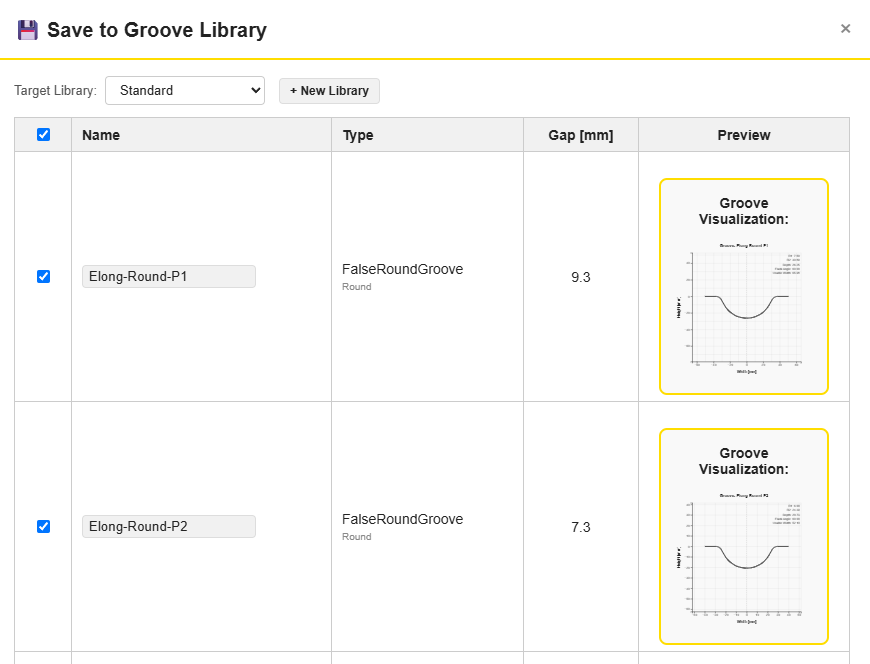
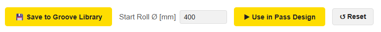

PyRoll GUI | Date: September 2026
The Groove Calculator tab computes a complete, pass-by-pass elongation distribution for a groove series, given only the initial and final cross-section area, a distribution factor \(Z\), and the number of passes \(n\). It replaces manual, iterative groove-by-groove calculations with a single calculation covering the whole series at once.
Two series types are supported:
For each mode, the tab shows a result table and groove preview plots for both the main passes and the intermediate passes, and can transfer the calculated series directly into Pass Design or save individual grooves into the Groove Library.
The mode switch at the top of the tab selects which groove series is calculated. Switching modes only changes which parameter panels, result tables and plots are shown — the Main Parameters (\(A_0\), \(A_E\), \(Z\), \(n\)) are remembered separately for each mode, so switching back and forth does not lose previously entered values.
The Main Parameters panel defines the overall elongation task:
| Field | Meaning |
|---|---|
| \(A_0\) [mm²] | Initial cross-section area (input stock) |
| \(l_0\) Ø / □ [mm] | Equivalent initial diameter (Round mode) or side length (Square mode) — bidirectionally linked to \(A_0\) |
| \(A_E\) [mm²] | Final (target) cross-section area |
| \(l_1\) Ø / □ [mm] | Equivalent final diameter / side length — bidirectionally linked to \(A_E\) |
| \(Z\) | Distribution / degression factor (\(Z = 1\) gives a uniform elongation distribution across all passes) |
| \(n\) (passes) | Number of main passes in the series |
Editing \(A_0\)/\(A_E\) automatically updates the equivalent diameter/side length fields and vice versa. Below the inputs, a live preview shows \(\lambda_{\text{total}}\), \(\lambda_m\) (mean elongation per pass) and \(\varepsilon_{Am}\) (mean logarithmic strain per pass) — updated as you type, even before pressing Calculate ▶.

Round ↔ Oval mode: Main Parameters, Round Groove Factors, and Oval Groove Factors (intermediate).

Square ↔ Diamond mode: Main Parameters, Square Groove Factors, and Diamond Groove Factors (intermediate).
These design ratios control the main-pass groove geometry:
| Factor | Meaning |
|---|---|
| \(2 \cdot r_2 / d\) | Main contour radius \(r_2\) relative to the equivalent diameter |
| \(r_1/s\) | Edge radius \(r_1\) relative to the groove gap \(s\) |
| \(s/d\) | Groove gap \(s\) relative to the equivalent diameter |
| \(\alpha\) [°] | Flank angle |
| Factor | Meaning |
|---|---|
| \(s/l\) | Groove gap \(s\) relative to the equivalent side length |
| \(R_{\text{start}}\), \(R_{\text{end}}\) [mm] | Main corner radius \(r_2\) of the first and last pass; interpolated linearly in between |
| \(r_1/s\) | Edge radius \(r_1\) relative to the groove gap \(s\) |
| \(\alpha\) [°] | Flank angle |
Intermediate passes (Oval between round passes, Diamond between square passes) are estimated from the geometric mean of the two adjacent main-pass areas, combined with a Wusatowski area form factor. Their geometry is controlled by:
| Factor | Meaning |
|---|---|
| \(b/h\) | Width-to-height aspect ratio of the oval |
| \(r_2/h\) | Main contour radius \(r_2\) relative to the oval height |
| \(r_1/s\) | Edge radius \(r_1\) relative to the groove gap \(s\) |
| \(s/h\) | Groove gap \(s\) relative to the oval height |
| Factor | Meaning |
|---|---|
| \(w/h\) | Diagonal aspect ratio of the idealised diamond (rhombus) cross-section |
| \(R_{\text{start}}\), \(R_{\text{end}}\) [mm] | Main corner radius \(r_2\) of the first and last intermediate pass; interpolated linearly in between |
| \(r_1/s\) | Edge radius \(r_1\) relative to the groove gap \(s\) |
| \(s/h\) | Groove gap \(s\) relative to the diamond diagonal \(h\) |
Press Calculate ▶ to compute the full pass-by-pass elongation distribution using the current parameters. Both result tables and both plot galleries (main and intermediate passes) are populated at once.
The main passes table lists, for each pass: the distribution exponent \(Z^y\), elongation \(\lambda_i\), cross-section area \(A_s\), equivalent diameter/side length, groove edge/main radii \(r_1\)/\(r_2\), groove gap \(s\), and flank angle \(\alpha\).

The intermediate passes table lists the same geometry columns for the Oval/Diamond grooves between each pair of main passes (including the initial "0 → 1" step from the input stock to the first main pass), using \(w\)/\(h\) instead of the equivalent diameter/side length.

Below each result table, a gallery of groove preview plots is shown — one per pass. Click any thumbnail to open it enlarged in a full-screen gallery view, with ‹/› arrow buttons (or the arrow keys / Esc) to navigate between grooves without closing the gallery.


💾 Save to Groove Library opens a modal listing every calculated groove (main and intermediate passes) as a selectable row, with an editable name, its type, gap, and a live preview plot. Select any subset, choose a target library (or create a new one on the fly with + New Library), and save — existing names are flagged with a confirmation prompt before being overwritten.

▶ Use in Pass Design builds a complete Pass Design sequence from the calculated series, alternating intermediate and main passes in the correct order (e.g. Oval → Round → Oval → Round…), using the Start Roll Ø field as the nominal roll diameter for every pass. The app then switches to the Pass Design tab so roll diameter and friction can be fine-tuned per pass before simulating.

↻ Reset restores every field in the Groove
Calculator tab to its default values and clears the result tables and plots.
All fields are also automatically reset whenever a new project is started
(File → New).
Michael Molter | PyRoll GUI – Groove Calculator Guide